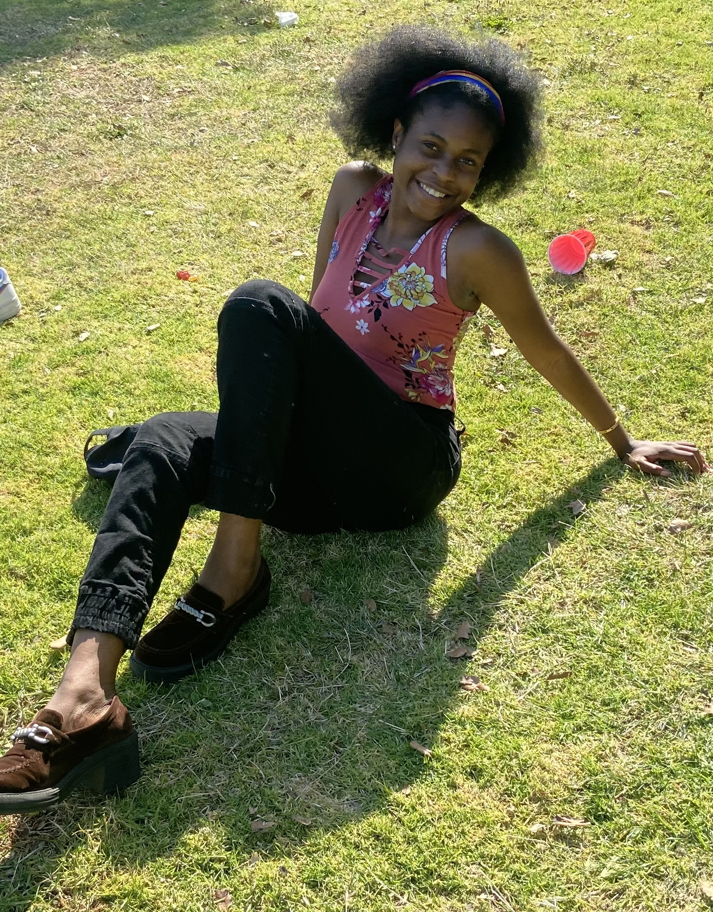

Samali
Studying, traveling, and fun car rides with Milli and Mochi.
Elyse
Planning, traveling, and cozy days with Craig and Teddy .
Walk with me brought Elyse and Samali together. Here is a journey of two lives intertwined showcasing friendship, discovery, and learning through shared moments.
Samali
Studying, traveling, and fun car rides with Milli and Mochi.
Elyse
Planning, traveling, and cozy days with Craig and Teddy .
You’ve walked with us. Now let’s see what you remember from the journey.